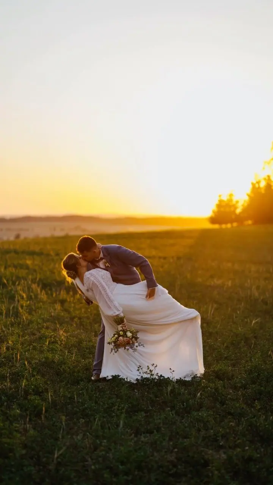
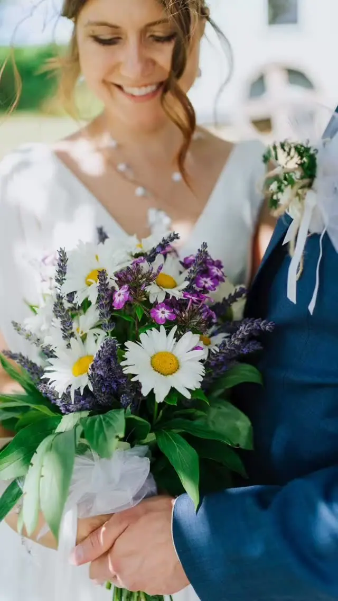
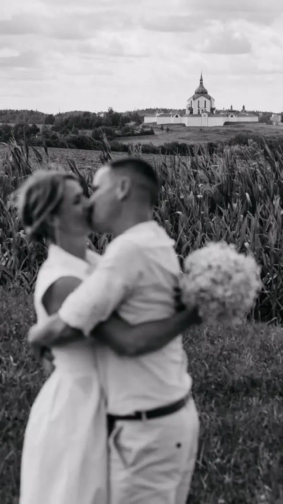
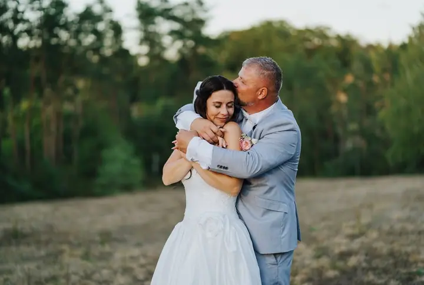

jedna
Svatby
Můžu fotit jen obřad se skupinovými fotkami, sedm hodin, nebo celý den od ranních příprav až po večerní zábavu. Fotky dostanete na flashdisku a k nim i vytištěné fotografie 10×15.

Svatební a rodinný fotograf · Žďár nad Sázavou, Vysočina

Jmenuji se Radim Chlubna a fotím svatby, rodiny a firmy na Vysočině. Doma jsem ve Žďáru nad Sázavou, kousek od Zelené Hory, a nejraději fotím venku, v polích a na loukách, kde je krásné světlo.
Více o mně
Co fotím
jedna
Můžu fotit jen obřad se skupinovými fotkami, sedm hodin, nebo celý den od ranních příprav až po večerní zábavu. Fotky dostanete na flashdisku a k nim i vytištěné fotografie 10×15.
dvě
Klidné focení venku, nejčastěji v přírodě Vysočiny. Z fotek si sami vyberete 15, které vám upravím.
Fotím rodinné a párové focení i celý křest se skupinkami. U rodinného focení si vybíráte 15 upravených fotek, z křtin je jich zhruba 50 až 100.
Fotím pro firmy, restaurace, penziony i menší podniky na Vysočině a dělám reportáže z akcí. Rozsah i cenu domlouváme podle toho, co potřebujete.
Fotky, díky kterým s vámi ty chvíle zůstanou.

Za objektivem
Ahoj, jsem Radim. Focení se naplno věnuji už 15 let a stále mě baví stejně. Svůj foťák beru jako vstupenku na místa, kam bych se jinak nedostal, mezi lidi, které bych nepotkal, a k příběhům, které bych nezažil.
Jsem za to vděčný a moc si vážím, že mi dovolíte nahlédnout do vašeho života. Ať jde o svatbu, křtiny, rodinné odpoledne nebo portrét, chci, abyste se před foťákem cítili přirozeně a v klidu.
Mám to štěstí, že žiju na Vysočině, kde je krásná krajina i světlo. Když zrovna nefotím, cestuju a z cest píšu blog. Odměnou za mou práci jsou fotky, díky kterým s vámi ty krásné chvíle, lásky a radosti zůstanou i do budoucna.
Radim
Pošlete mi termín a místo svatby. Teď už přijímám rezervace na svatby v roce 2027.
Sejdeme se, probereme program dne, místa na focení i to, na čem vám nejvíc záleží.
Podle zvoleného balíčku fotím obřad a společné focení, nebo celý den od ranních příprav až po večerní zábavu.
Upravené fotografie dostanete na flashdisku a k nim i vytištěné fotky 10×15, u obřadu navíc online galerii.
Portfolio
Otázky
Focení obřadu se skupinovými fotkami a společným focením novomanželů stojí 9 000 Kč. Sedm hodin focení vyjde na 15 500 Kč a celý den do zhruba 21:00 na 21 000 Kč.
U obřadu je to zhruba 150 upravených fotografií, u sedmi hodin asi 350 a u celého dne kolem 550. Ke každému balíčku dostanete i vytištěné fotky 10×15.
Rodinné, párové i těhotenské focení stojí 3 000 Kč a zahrnuje 15 upravených fotografií podle vašeho výběru. Každá další fotka stojí 200 Kč a doprava mimo Žďár nad Sázavou je 10 Kč za kilometr.
Video sám netočím, ale rád vám doporučím kolegu Jiřího Májka, který se svatebnímu videu věnuje.
Napište pár vět o tom, co si představujete. r.chlubna@gmail.com